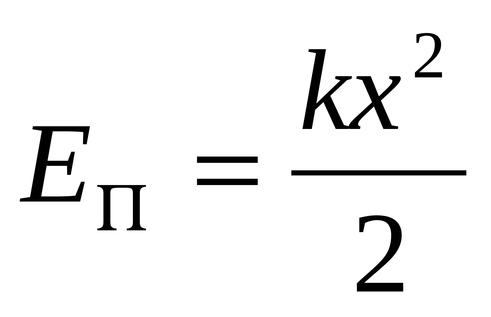
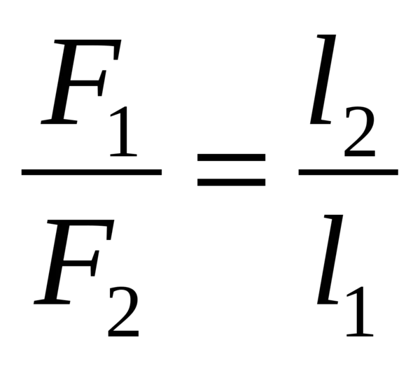
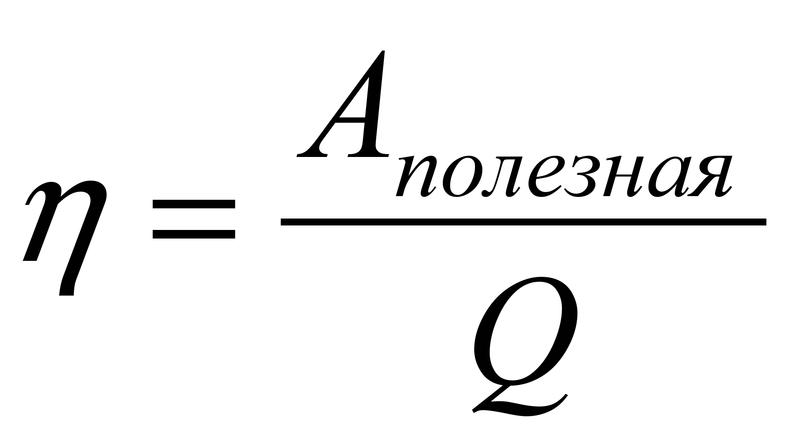

Кинетическая и потенциальная энергия
Потенциальная энергия
Потенциальная энергия - это энергия, которая зависит от положения материальной точки.
Кинетическая и потенциальная энергии измеряются в "Джоулях" [E] = Дж
Формула потенциальной энергии: Eп = mgh,
Где m - масса, g - ускорение свободного падения, h - высота.
Задача
Человек сбросил с балкона наковальню массой 100 кг, высота от земли до балкона 8 метров. Какая потенциальная энергия наковальни?
Решение
m = 100 кг
g = 10 м/с2
h = 8 м
Eп = mgh = 100 * 10 * 8 = 8 кДж
Ответ: Eп = 8 кДж.
Существует также потенциальная энергия пружины.
Не путайте с кинетической энергией!
Формула потенциальной энергии пружины:
Где k - коэффициент жесткости, x - изменение длины пружины.
Задача
Пружину растянули на 5 см, коэффициент жесткости пружины равен 0,6. Найдите потенциальную энергию пружины.
Решение
k = 0,6
x = 0.05 см
Eп = kx2/2 = 0,6 * 0.052 / 2 = 0.00075 Дж
Ответ: Eп = 0.00075 Дж.
Кинетическая энергия
Кинетическая энергия - это энергия в движении, т.е. эта энергия не зависит
от какой - то материальной точки.
Формула кинетической энергии:
Где m - масса, v - скорость.
Задача
Пуля летит со скоростью 800 м/с, массой 15 г. Найдите кинетическую энергию пули.
Решение
m = 0,15 кг
v = 800 м/с
Eк = mv2/2 = 0.15 * 8002 / 2 = 48 кДж
Ответ: Eк = 48 кДж.
Условие равновесия рычага
Момент силы - это физическая величина, равная произведению силы на ее плечо.
Момент силы измеряется в "Ньютон метрах" [M] = Н * м
Формула Момента силы: M = F * L,
Где F - сила, L - плечо силы.
Кратчайшее расстояние между точкой опоры и прямой, вдоль которой на рычаг действует сила,
называется плечом силы.
Формула равновесия рычага:
Или: F1L1 = F2L2
Задача
Рычаг находится в равновесии, его плечи равны 15 см и 60 см. Меньшая сила, действующая на рычаг, равна 1,5 Н.
Определите величину большей силы. Какой выигрыш в силе дает рычаг? Чему равен выигрыш в работе?
Решение
F1 = 1,5 Н
L1 = 0,6 м
L2 = 0,15 м
F2 = ?
Силу находим по формуле равновесия рычага: 0,15F2 = 0.9; F2 = 6 Н
Выигрыш в силе: 6 H / 1.5 H = 4 H;
Выигрыша в работе не бывает;
Ответ: 6 Н, 4 Н, 0.
Коэффициент полезного действия (КПД)
КПД показывает, какая часть от затраченной работы идет на полезную работу.
КПД измеряется в процентах [η] = %
Формула КПД

* 100%
Где Aп - полезная работа, Q (Aз) - затраченная работа.
Задача
С помощью рычага груз массой 20 кг равномерно подняли на высоту 80 см.
При этом длинное плечо рычага, к которому приложена сила 120 Н, опустилось на 2 м. Каков КПД рычага?
Решение
m1 = 20 кг
h1 = 0,8 см
F2 = 120 Н
h2 = 2 м
η = ?
Ап = m1gh1 = 20 * 10 * 0,8 = 160 Дж
Аз = F2h2 = 120 * 2 = 240 Дж
η = Ап / Аз * 100 % = 160 / 240 * 100 = 66.6 %
Ответ: η = 66.6 %